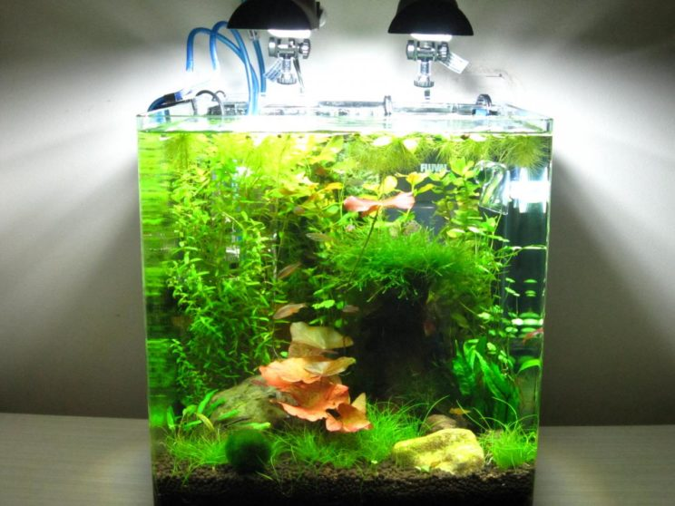
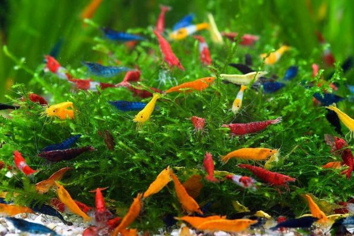

Аквариумные Креветки
Почему стоит завести
Пресноводные креветки появились в коллекциях российских любителей не так давно, и уже успели завоевать новых поклонников. Одно из главных их достоинств — малые размеры и, следовательно, способность жить в аквариумах небольшого объёма, которые легко впишутся в любую городскую квартиру или даже на офисный стол. Какие же требования предъявляют эти ракообразные к своему жилищу?
Что нужно для начала
Под креветочник подойдет любой аквариум от 10 литров. Бытует мнение, что вишневые креветки лучше смотрятся на черном грунте, но я считаю, что это уже дело вкуса.
Так как применение CO2 в креветочнике нежелательно (особенно начинающими аквариумистами и в маленьких обьемах, возможны скачки pH, и как следствие, заморы), растения долж ны быть неприхотливыми. Такими как наяс, криптокорина Вендта, таиландский папоротник, бакопа каролинская, перистолистник, роголистник, риччия, пр. мелколиственные растения, конечно же, яванский мох (креветки туда выпускают мальков, также является прекрасным убежищем как для молоди, так и для взрослых креветок).
Креветки очень чувствительны к уровню кислорода, аэрация (хотя бы ночью) обязательна. Есть альтернатива: либо аэрация, либо фильтр (внутренний или внешний для больших объемов). При использовании внутренних фильтров (например, Fan-mini) я снимаю стакан с губки, иначе туда забивается молодь и это чревато потерями при чистке фильтра.
Нужна грелка, креветки могут жить в диапазоне от 150C до 310C, попадалась информация, что при выдержке креветок сроком от 7-ми дней при высоких температурах (от 300C) возможна их полная или частичная стерилизация. Не знаю, проверять как-то не хочется
Оптимальная температура для креветочника 21-260C. C высокими температурами (особенно в условиях маленького литража) могут возникнуть проблемы. Напомним, креветки весьма чувствительны к содержанию растворенного в воде кислорода и при его недостатке (к которому приводит повышенная температура) начинают испытывать удушье.
Нахождение же этих животных в воде с температурой свыше 32°С вообще недопустимо, поскольку может привести к коагуляции белка в организме беспозвоночноых и, как следствие, их гибели. Креветки предпочитают воду, активная реакция которой близка к нейтральной или смещена в щелочную область (рН 6,8-8,5). Кислая среда (рН ниже 6,2) вызывает разрушение хитинового покрова. По той же причине не рекомендует ся держать их в мягкой воде, бедной солями кальция, служащего основным строительным материалом креветочной брони.
Скачать файл с рекоминдациямиСписок креветок для новичка
Амано

Блю дрим

Неокардины
Кординалы